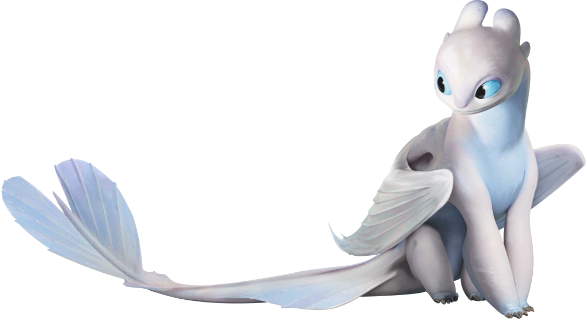

.png) |
A Fúria da Luz é uma dragão fêmea que aparece no filme Como Treinar o Seu Dragão 3. Seu Fogo ao ser atirado no céu enquanto voa faz com que ela desapareça, veloz como a luz. | Ela é introduzida como um tipo de dragão lendário, com características únicas que a diferenciam de outras espécies de dragões. A Fúria da Luz possui um brilho radiante e uma aura mágica, tornando-a uma presença verdadeiramente extraordinária no universo dos dragões. |
| Ao decorrer da história Banguela e ela se encontram, ela pensava que humanos eram perigosos, Banguela mostrava o contrário e as poucos se tornaram mais próximos, se conhecem tornam-se reis, um casal lindo e tiveram filhotes muito lindos. Governando seu reino, pórem separados de seus amigos. | |
|  |